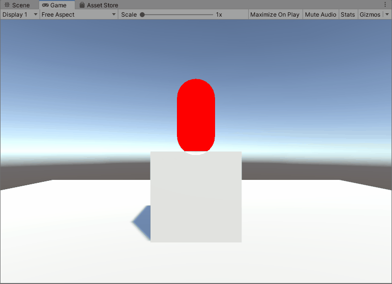
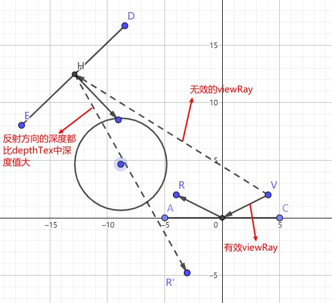
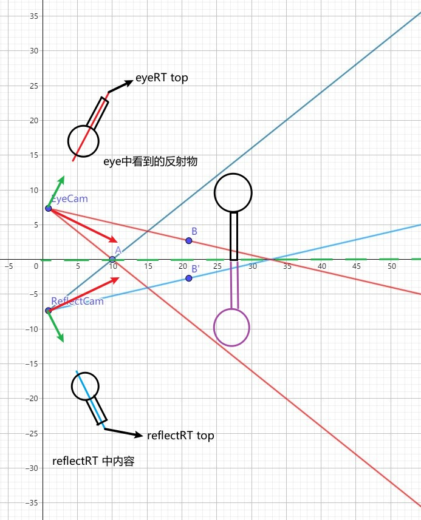
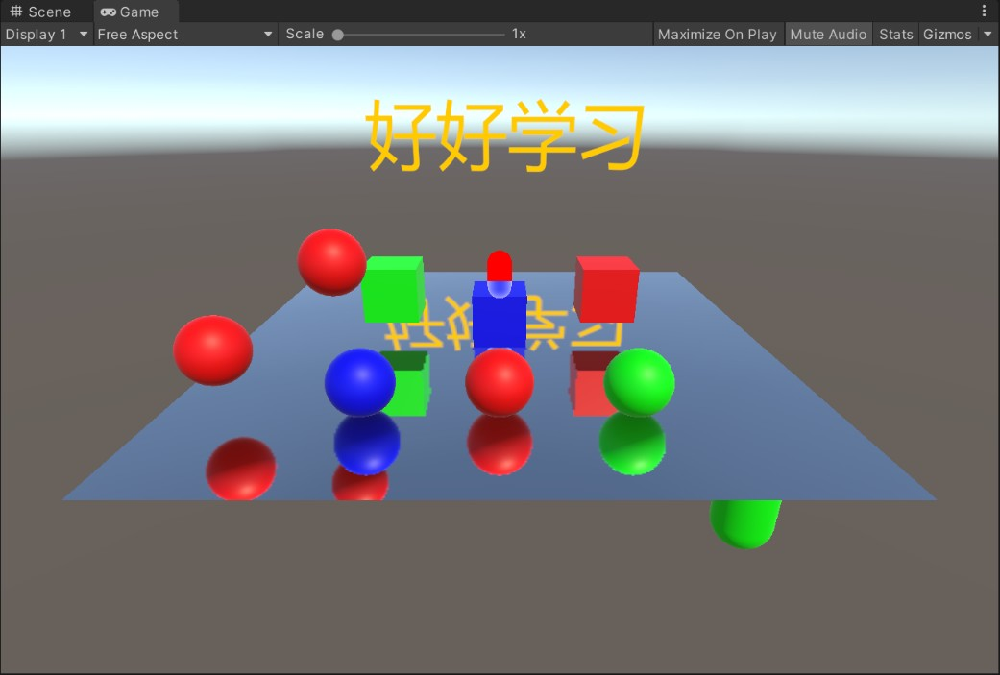
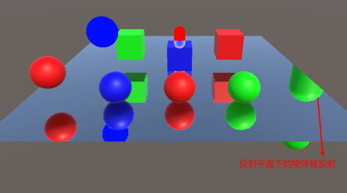
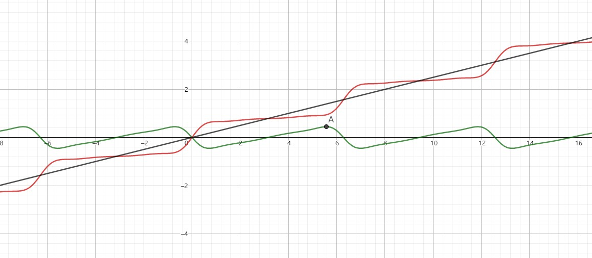
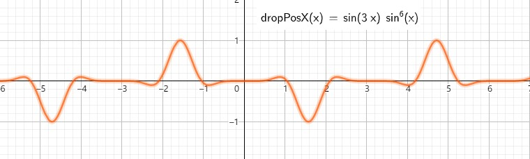

ShaderToys
Table of Contents
ShaderToys note.
<!– more –>
MyEffect
01OcclusionHighlight

02ScanEffect

03SSR
获得深度值和 Normal
// common 得到viewRay v2f vert(appdata v) { // ...... float4 ndcFarPlanePos = float4(o.uv * 2.0 - 1.0, 1.0, 1.0); float4 viewDir = mul(unity_CameraInvProjection, ndcFarPlanePos); o.viewRay = viewDir.xyz / viewDir.w; } float4 frag(v2f i) { // forward path float linear01Depth; half3 viewSpaceNormal; DecodeDepthNormal(tex2D(_CameraDepthNormalsTexture, uv), linear01Depth, viewSpaceNormal); // deferred path float decodedDepth = Linear01Depth(tex2D(_CameraDepthTexture, i.uv).r); float3 viewSpaceObjPos = decodedDepth * i.viewRay; float3 worldSpaceNormal = tex2D(_CameraGBufferTexture2, i.uv).rgb * 2.0 - 1.0; float3 viewSpaceNormal = normalize(mul((float3x3)_WorldToView, worldSpaceNormal)); }
拖影问题

导致上面问题的原因如下图所示：

./ShaderToys/ssr_multi_shadow_01.ggb
得到每个像素点对应物体的厚度，可以精确避免上面问题。通过下面代码定义了一个参考的厚度_DepthThickness，可以一定程度上消除上面问题；
bool CheckDepthCollision(float3 viewPos, out float2 screenPos) { float4 clipPos = mul(UNITY_MATRIX_P, float4(viewPos, 1.0)); clipPos = clipPos / clipPos.w; screenPos = float2(clipPos.x, clipPos.y) * 0.5 + 0.5; float eyeZ = GetEyeZ(screenPos); return screenPos.x > 0 && screenPos.y > 0 && screenPos.x < 1.0 && screenPos.y < 1.0 && eyeZ < -viewPos.z && // eyeZ < 当前检测的深度 (说明检测点在当前像素之后) eyeZ + _DepthThickness > -viewPos.z; // eyeZ + 物体厚度 > 当前检测的深度 (说明 eyeZ+_DepthThcikness 对应的点在当前检测点之前) }
二分搜索优化
RayMarching 找到的点对应的深度超过 _CameraDepthTex 中记录深度后，将 currentPos 退回到上一步位置，并且将 currentRayMarchingStep 减半，再次 RayMarching。
TODO 屏幕空间光栅化 RayMarching
参考资料
- Unity 反射效果 https://blog.csdn.net/puppet_master/article/details/80808486
- SSR in Unity5 en http://www.kode80.com/blog/2015/03/11/screen-space-reflections-in-unity-5/
- SSR in Unity5 cn https://blog.csdn.net/hehemingsgc6/article/details/53888902
- Screen Space Ray Tracing http://casual-effects.blogspot.com/2014/08/screen-space-ray-tracing.html
- https://github.com/dreamfairy/Unity_SSR_SSPR
04PlanarReflection
原理
平面反射所观察到的像 和 先将场景物体镜像到反射平面另一侧所观察的物体是一样的。
- 求解将场景物体镜像到反射平面另一侧的反射变换矩阵
- 从视角摄像机创建代理摄像机，更新代理摄像机的 worldToCameraMatrix，使其包含反射变换矩阵
- 使用代理摄像机渲染场景，将结果写入 ReflectionRT 中。
- 使用视角摄像机对反射平面进行渲染。将对应像素的坐标转换到屏幕空间得到对 ReflectionRT 的采样 uv。(屏幕空间坐标当然要标准化为 0-1)


Tips:
平面反射渲染的原理和 Projector 的原理是一样的。 Projector 的原理
近平面并不是胶片(film)，其只是裁剪平面。上面视角摄像机渲染反射平面时等价于 projector 投影反射物像到反射平面，这里 projector 的投影矩阵和视角摄像机的投影变换矩阵相同。
- 反射变换矩阵的推导 Reflection Matrix
Error 平面下物体异常反射

通过修改反射摄像机的近裁剪平面，裁剪掉平面下物体就可以避免该问题。具体原理参考下面文章。
05SSPR
基础知识
InterlockedMin InterlockedMax
void InterlockedMin(in R dest, in T value, out T original_value); void InterlockedMax(in R dest, in T value, out T original_value); // R dest 为目标地址 // T value 为输入值 // T original_value 为原始值 // 该操作只能在int和uint类型并且是共享内存变量的资源上执行 // 该操作需要Shader Model 5 或更高
Error
Compute shader (GSSPR): Property (HashRT) at kernel index (0): Attempting to bind Texture ID 157 as UAV but the texture wasn't created with the UAV usage flag set!
没有创建 HashRT 对应的 RenderTexture，导致该问题。
给物体赋予 GSSPRPlane Shader 后，物体变消失
drawingSettings 中指定的 ShaderTagId 和 GSSPRPlane shader 中使用的 ShaderMode 不一致，导致使用 GSSPRPlane Shader 的物体没有被渲染。
ShaderTagId lightMode_SSPR_STI = new ShaderTagId("GSSPR"); // var drawingSettings = CreateDrawingSettings(lightMode_SSPR_STI, ref renderingData, SortingCriteria.CommonOpaque); var filteringSettings = new FilteringSettings(RenderQueueRange.all); context.DrawRenderers(renderingData.cullResults, ref drawingSettings, ref filteringSettings);
参考资料
- http://remi-genin.fr/blog/screen-space-plane-indexed-reflection-in-ghost-recon-wildlands/
- https://github.com/ColinLeung-NiloCat/UnityURP-MobileScreenSpacePlanarReflection
- GraphicsLab Project 之 Screen Space Planar Reflection https://www.cnblogs.com/idovelemon/p/13184970.html
- Unity URP 移动平台的屏幕空间平面反射（SSPR）趟坑记 https://zhuanlan.zhihu.com/p/150890059
- URP 屏幕空间平面反射（ScreenSpacePlanarReflection）学习笔记 https://zhuanlan.zhihu.com/p/367496408
06NoiseBall
- 利用 ComputeShader 生成三角形三个顶点的位置和法线数据，将数据分别存入 position ComputeBuffer 和 normal ComputeBuffer 中。
- 使用 Graphics.DrawMeshInstancedIndirect 以 Instanced 方式绘制三角形
Graphics.DrawMeshInstancedIndirect 方法的 bufferWithArgs 参数必须包含 5 个整数，它们分别表示：
(1) 每个实例的索引数量
(2) 实例数量
(3) 起始的索引地址
(4) 起始的顶点地址
(5) 起始的实例地址
下面为 NoiseBall 中 bufferWithArgs 填充的数据：
_drawArgsBuffer.SetData(new uint[5] { 3, (uint)TriangleCount, 0, 0, 0 });
07RainDropEffect

模拟雨滴流动
- 使用 sin(3*w)*pow(sin(w), 6)*0.45 使得雨滴在 grid 内，x方向的位置随机生成
- 使用 y=-sin(x+sin(x+sin(x)*0.5))*0.45 来模拟雨滴流动时，先快后慢的特点
- 在上面函数基础上叠加 0.25x 保证雨滴不往回流
float3 Layer(float2 UV, float t) { float2 aspect = float2(2, 1); // 把屏幕空间划分为多个Grid float2 uv = UV*_Size*aspect; uv.y += t * 0.25; // frac(uv) - 0.5 使得grid_uv=(0,0)位置为grid的中心点 // grid_uv 表示grid内每个像素点的grid uv float2 grid_uv = frac(uv)-0.5; float2 id = floor(uv); float n = N21(id); // 0 - 1 t += n*6.2831; // 将屏幕在y方向上划分为10等分，让y方向上的雨滴流动路径错开 float w = UV.y * 10; float x = (n - 0.5)*0.8; // -0.4 - 0.4 // 模拟雨滴流动过程中x方向的轨迹变化 大部分时间居中 偶尔向左流 偶尔向右流 x += (0.4-abs(x)) * sin(3*w)*pow(sin(w), 6)*0.45; // 模拟雨滴流动时先快后慢的效果 float y = -sin(t+sin(t+sin(t)*0.5))*0.45; // 控制雨滴的形状 y -= (grid_uv.x - x)*(grid_uv.x - x); // (x,y)为当前雨滴的位置 dropToGridPixelDir 为雨滴指向grid内像素的方向向量 float2 dropToGridPixelDir = (grid_uv - float2(x, y)) / aspect; // 限制雨滴的范围 float drop = S(0.05, 0.03, length(dropToGridPixelDir)); // grid_uv - float2(x, t*0.25) 抵消掉上面 uv.y+=t*0.25 使得尾部雨滴不随时间移动 float2 trailToGridPixelDir = (grid_uv - float2(x, t*0.25)) / aspect; // 控制尾部雨滴数量 trailToGridPixelDir.y = (frac(trailToGridPixelDir.y * 8)-0.5)/8; // 控制尾部雨滴大小 float trail = S(0.03, 0.01, length(trailToGridPixelDir)); // 小于 dropToGridPixelDir.y 的地方是，雨滴还未经过的地方, 下面代码使得小于 dropToGridPixelDir.y 的轨迹为黑色 float fogTrail = S(-0.05, 0.05, dropToGridPixelDir.y); // 模拟轨迹逐渐消失的效果 fogTrail *= S(0.5, y, grid_uv.y); // 模拟尾部雨滴逐渐消失的效果 trail *= fogTrail; // 使用 dropToGridPixelDir.x 限制fogTrail的范围 fogTrail *= S(0.05, 0.04, abs(dropToGridPixelDir.x)); float2 offs = drop * dropToGridPixelDir + trail * trailToGridPixelDir; return float3(offs, fogTrail); }
下面文件展示了用到的函数图像：


./ShaderToys/rain_drop_func.ggb
- 任意函数图像旋转一定角度后的函数表达式是什么？ https://www.zhihu.com/question/364758924/answer/1191667447
模拟雨滴折射
// drops.xy 存储的是 drop到gridPixel的方向 float3 drops = float3(drop * dropToGridPixelDir + trail * trailToGridPixelDir, fogTrail); // grabUV沿着dropToGridPixelDir方向偏移进行采样，来模拟折射现象 grabUV += drops.xy * _Distortion * fade; col = tex2D(_GrabTexture, grabUV);
使用 GrabPass 实现玻璃效果
动态开启关闭 GrabPass
SubShader { Tags { "RenderType"="Opaque" "IgnoreProjector"="True" "PreviewType"="Plane" "PerformanceChecks"="False" } Cull Off GrabPass { Tags { "LightMode" = "Always" } "_GrabTexture" } Pass { Tags { "LightMode" = "ForwardBase" } // ...... } }
// 通过下面代码可以动态禁用GrabPass mat.SetShaderPassEnabled("Always", false)
08MagnifyingGlassEffect

09Skybox
10WaterFish
11Flowmap
12Imposter
TODO
Rain On Camera
- Unity RainyWindow https://zhuanlan.zhihu.com/p/141902090
- Unity Shader 之萧萧暗雨打窗声 https://zhuanlan.zhihu.com/p/77704760
- Unity-Raindrops https://github.com/ya7gisa0/Unity-Raindrops
- https://github.com/ya7gisa0
keijiro
- Flipbook https://github.com/keijiro/Flipbook
- Text2Man https://github.com/keijiro/Text2Man
- Swarm https://github.com/keijiro/Swarm
- CloudSkybox https://github.com/keijiro/CloudSkybox
- GTeleporter https://github.com/keijiro/GTeleporter https://lab.uwa4d.com/lab/5bc54e8404617c5805d4e89b
- KinoIsoline https://github.com/keijiro/KinoIsoline